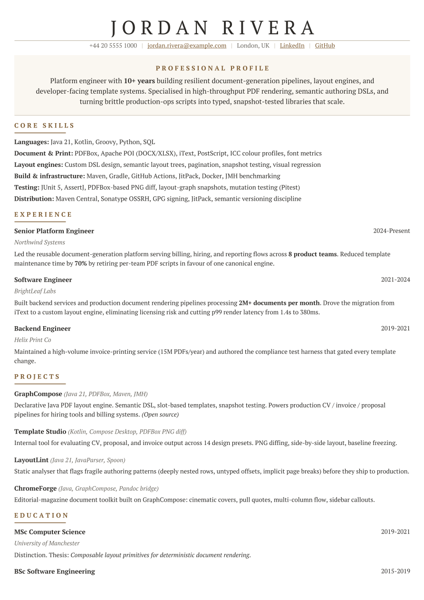

Classic Serif
Two-page editorial CV with Times-style serif headings and conservative grey rules.
2 pages

(opens the PDF)Use this template
<dependency>
<groupId>io.github.demchaav</groupId>
<artifactId>graph-compose-bundle</artifactId>
<version>2.4.0</version>
</dependency>implementation 'io.github.demchaav:graph-compose-bundle:2.4.0'Why the aggregate this document is drawn in a bundled font, and those ship separately from the engine; the aggregate carries them along with the PDF backend and the templates, in one coordinate
Java 17 or newer
Preset com.demcha.compose.document.templates.cv.presets.ClassicSerif
Data model com.demcha.compose.document.templates.cv.data.CvDocument
CvIdentity identity = CvIdentity.builder()
.name("Jane", "Doe")
.jobTitle("Backend Engineer")
.contact("+44 20 7946 0958", "jane.doe@example.com", "London, UK")
.build();
CvDocument cv = CvDocument.ofMainSections(identity, List.of(
new ParagraphSection("Profile", "Ten years building document pipelines.")));
BrandTheme theme = BrandTheme.boxedClassic(); // optional override
DocumentTemplate<CvDocument> template = BoxedSections.create(theme);
try (DocumentSession document = GraphCompose.document(Path.of("cv.pdf")).create()) {
template.compose(document, cv);
document.buildPdf();
}./mvnw -f examples/pom.xml exec:java -Dexec.mainClass=com.demcha.examples.templates.cv.v2.CvClassicSerifExampleWrites examples/target/generated-pdfs/templates/cv/cv-classic-serif-v2.pdf